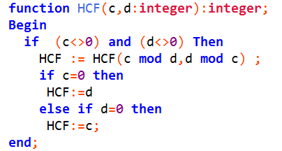

Program examples
Program hello;
Var
a : Integer;
Begin
Write('Enter a number : ');Writeln('Enter a number : '); //output thingsReadln(a); //read input and assign the value to variables
End.
This is the example of a simple program.
Var is used to declare a variable for calling.
Write and Writeline is used to create output for users.
Function is a little program which must has a return value.
Procedure is same as function but it don't necessarily have a return value.
Readkey reads the key the user enters.
ClrScr clears the console screen.
Uses declares the libraries and references you are using.
Mod takes the remainder and Div takes the quotient.
And a lot more.
Here, I will show u some coding examples.
Function BinaryToDenary ( Bin : Integer ) ;Begin BinToDen := 0; multiple := 1; Repeat BinToDen := BinToDen + Bin
Mod 2 * multiple ;
Bin := Bin Div 10; multiple := multiple * 2; Until Bin = 0;End;
Function DenaryToBinary ( Den : Integer ) ;Begin DenToBin := 0; multiple := 1; Repeat DenToBin := DenToBin + Den
Mod 2 * multiple ;
Den := Den Div 2; multiple := multiple * 10; Until Den = 0;End;
These two programs are used to convert numbers into different numbers in different notation.
Compare the difference and understand the principle.
Program Hello;BeginWrite('Enter a number (4 digits) : ');
Readln(a);reverse := 0;
For i := 1 To 4 DoBegin reverse := reverse * 10 + a Mod 10; a := a div 10;End;Writeln('reverse);End.
Check out the nested for loop examples.
Program Hello;BeginFor i := 1 To 4 DoBegin For j := 1 To i Do Write('*'); Writeln;End;For i := 4 DownTo 1 DoBegin For j := 1 To 5-i Do Write('*'); Writeln;End; End.

This is an example of a program finding HCF. It can handle both positive and negative numbers. Also, it doesn't matter which number is bigger. However, it can't handle 0.